네트워크 팀 프로젝트 · itch.io 출시
Infectstella
함께 파밍하다 누군가 감염되는 최대 4인 협동·배신 멀티플레이 게임. 접속부터 게임 진입, 정산, 랭킹 등록까지 클라이언트 진행 흐름 전 구간을 맡았고, 여러 사람이 함께 바꾸는 값은 마스터 클라이언트 한 곳에서만 바뀌도록 구조를 통일했습니다.
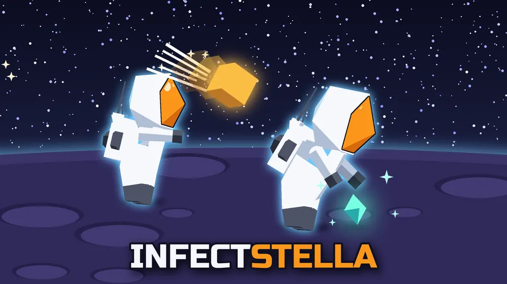
- 기간
- 2주 (2026.10.12 ~ 10.23)
- 인원 · 역할
- 3인 팀 · 로비 / 게임 진행 / UI / Firebase 백엔드 / 시스템 통합
- 기술
- Unity 6 · C# · Photon PUN 2 · Firebase (Anonymous Auth, Realtime DB) · UniTask · More Mountains Feedbacks
- 기여 규모
- 커밋 114개 (merge 제외) · 담당 스크립트 19개, 약 3,800줄
- 링크
- itch.io에서 플레이GitHub
1. 이 프로젝트로 보여 드리는 것
| 강점 | 근거 | 결과 |
|---|---|---|
| 권한을 기준으로 상태를 다룬다 | 골드·탈출·문·게임 상태 전환을 모두 "요청 → 마스터 검증 → 전체 동기화" 한 가지 패턴으로 통일. RPC를 받는 쪽에서도 마스터인지 다시 확인 | 클라이언트마다 값이 갈라지는 경우를 구조로 차단 |
| 비동기 흐름을 끝까지 책임진다 | 클라이언트별 로딩 완료를 Custom Property로 공유하고, 마스터가 전원 완료를 확인한 뒤 RPC로 씬 활성화. UniTask 취소·타임아웃 처리 | 로딩이 빠른 플레이어만 먼저 게임에 들어가는 문제 방지 |
| 여러 시스템을 하나의 흐름으로 묶는다 | Firebase 인증 → 로비 → 로딩 → FSM 게임 진행 → 정산 → 랭킹 등록까지 직접 연결 | 접속부터 결과까지 끊기지 않는 플레이 흐름 |
| 사용자 체감까지 마무리한다 | 방 목록 차등 갱신, 채팅·버튼 피드백, 상태별 정보창 | 상태 변화가 화면과 소리로 바로 전달됨 |
2. 구조
- FirebaseLinkManager익명 인증 · 닉네임
- PhotonLinkManager로비 · 방 · 대기실
- LoadingHelper전원 로딩 확인
- GameManagerFSM · 골드 · 감염 · 정산
- Firebase랭킹 등록
PlayerDataObserver가 플레이어별 상태(ActorNumber 기준)를 GameManager에 등록하고, 사망·부활 이벤트로 종료 조건을 판정합니다.
3. 핵심 구현
① 마스터 권한 기반 상태 동기화
- 문제
- 골드처럼 모두가 공유하는 값을 각 클라이언트가 직접 바꾸면, 동시에 요청할 때 값이 클라이언트마다 달라집니다.
- 판단
- 값의 주인을 마스터 클라이언트 하나로 정하고, 다른 클라이언트는 "요청"만 보냅니다.
- 결과
- 요청 → 마스터 재검증 → 계산 → 전체 동기화의 4단계 흐름. 같은 구조를 탈출, 문 토글, 게임 상태 전환에도 적용했습니다.
코드 — 골드 지급 흐름
// 1. 진입점: 마스터면 직접 처리, 아니면 마스터에게 요청
public void RequestAddGold(int amount)
{
if (PhotonNetwork.IsMasterClient)
ExecuteAddGold(amount);
else
photonView.RPC(nameof(RPC_RequestAddGold), RpcTarget.MasterClient, amount);
}
// 2. 마스터만 받는 RPC: 받는 쪽에서도 한 번 더 검증
[PunRPC]
private void RPC_RequestAddGold(int amount)
{
if (!PhotonNetwork.IsMasterClient) return;
ExecuteAddGold(amount);
}
// 3. 계산은 마스터에서만, 결과를 전체에 전파
private void ExecuteAddGold(int amount)
{
currentGold += amount;
photonView.RPC(nameof(RPC_SyncGold), RpcTarget.All, currentGold);
}
// 4. 모든 클라이언트가 같은 값으로 갱신
[PunRPC]
public void RPC_SyncGold(int syncedGold)
{
currentGold = syncedGold;
OnGoldChanged?.Invoke();
}② 전원 로딩 확인 후 게임 씬 진입
- 문제
- 클라이언트마다 씬 로딩 속도가 달라서, 자동 씬 동기화를 쓰면 먼저 로딩된 플레이어가 혼자 게임을 시작합니다.
- 판단
AutomaticallySyncScene을 끄고, 씬 활성화 시점을 마스터가 직접 결정합니다.- 결과
- 각 클라이언트는 로딩 진행률이 0.9에 도달하면
SceneLoaded속성을 true로 올리고, 마스터가 전원 완료를 확인하면 RPC로 씬을 활성화합니다. 120초 안에 전원이 준비되지 않으면 타이틀로 돌아갑니다.
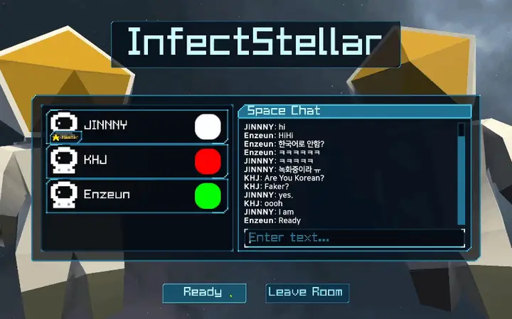
③ Firebase 인증 · 닉네임 · 랭킹
- 익명 인증 → 닉네임 로드·저장 → 랭킹 등록·조회까지 UniTask 비동기로 연결했습니다. 초기화 중에는 로딩 화면을 보여 줍니다.
- 랭킹은
OrderByChild("earnedGold").LimitToLast(n)으로 상위 n개를 받아 내림차순으로 정렬하고, 등록은 마스터만 수행해 중복 등록을 막았습니다.
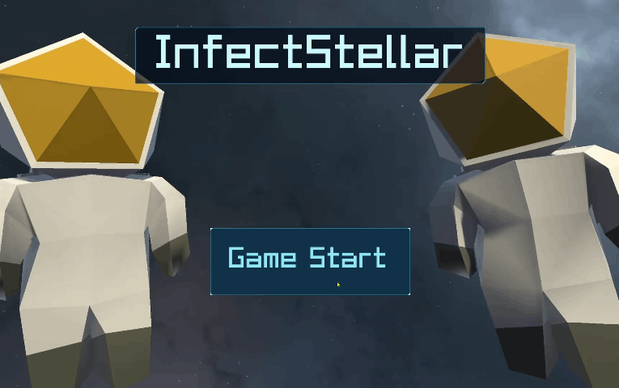
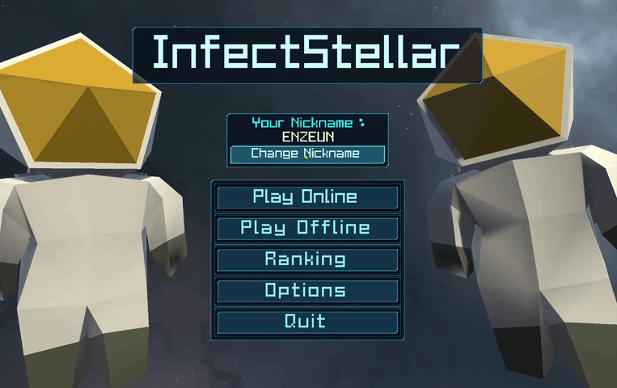
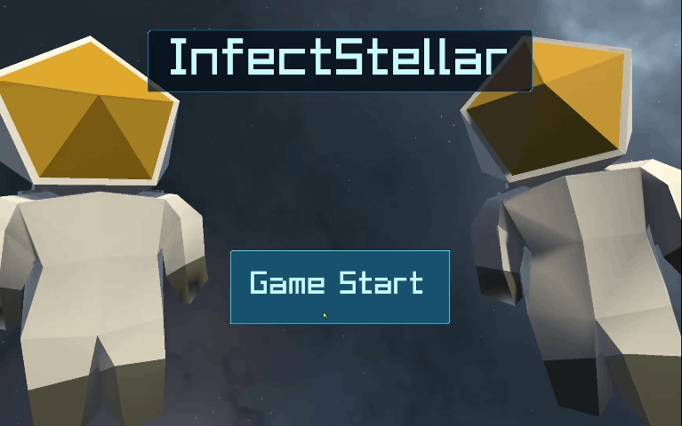
④ 로비와 대기실
- 방 생성·참가·빠른 매칭, 입장·퇴장에 따른 대기실 갱신, 채팅과 시스템 메시지를 구현했습니다.
- 색상·준비·씬 로딩 상태는 Player Custom Properties로 공유하고, 속성 변경 콜백을 이벤트로 UI에 연결했습니다.
- 방 목록 차등 갱신: 목록이 바뀔 때마다 UI를 전부 다시 만들지 않고, 기존 항목은 재사용·갱신하고 새 방만 추가하며 사라진 방만 제거합니다.
코드 — 방 목록 UI 차등 갱신
refreshCount++;
foreach (var room in rooms)
{
bool found = false;
foreach (var rc in roomContents)
{
if (rc.roomInfo.Name == room.Name)
{
rc.roomInfo = room;
rc.refreshCount = refreshCount;
rc.RefreshRoomContent();
found = true;
break;
}
}
if (!found)
InstancitateRoom(room);
}
// 이번 갱신에서 확인되지 않은 항목만 제거 (구독 해제 후 파괴)
for (int i = roomContents.Count - 1; i >= 0; i--)
{
if (roomContents[i].refreshCount != refreshCount)
{
roomContents[i].OnSelected -= ChangeSelectedRoom;
roomContents[i].DestroyThisRoom();
roomContents.RemoveAt(i);
}
}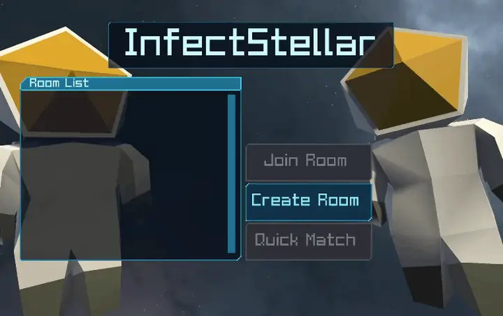
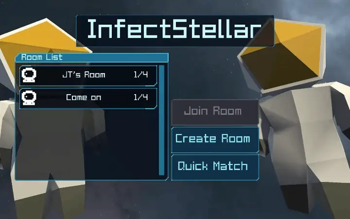
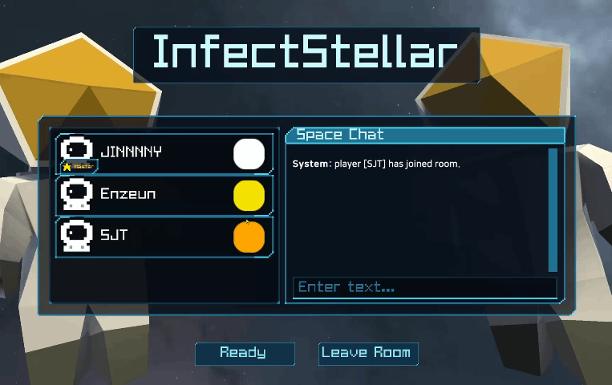
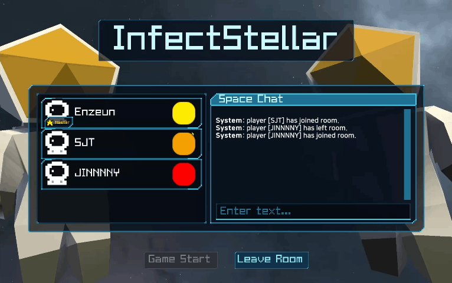
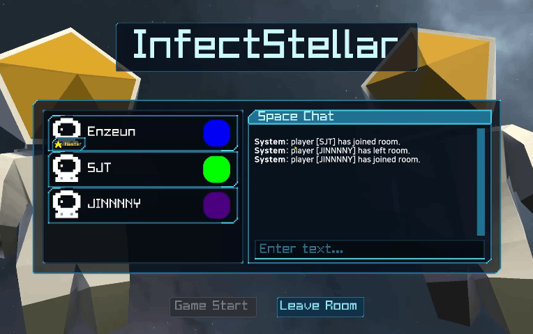
⑤ 게임 진행 FSM · 감염 · 정산
- 게임 진행을 8개 상태의
MMStateMachine으로 관리하고, 상태 전환은 마스터만 RPC로 전파합니다. - 감염: 시작 3분 뒤 첫 시도, 이후 1분마다 20% 확률로 살아 있는 플레이어 중 한 명을 마스터가 선정합니다.
| 결과 | 정산 |
|---|---|
| 탈출 성공 | 보유 금액 100% 반영 |
| 일반 플레이어 사망 | 1명당 20% 차감 |
| 감염자 처치 후 탈출 | 40% 보너스 |
| 감염자 단독 생존 | 50% 보너스, 감염자만 랭킹 등록 |
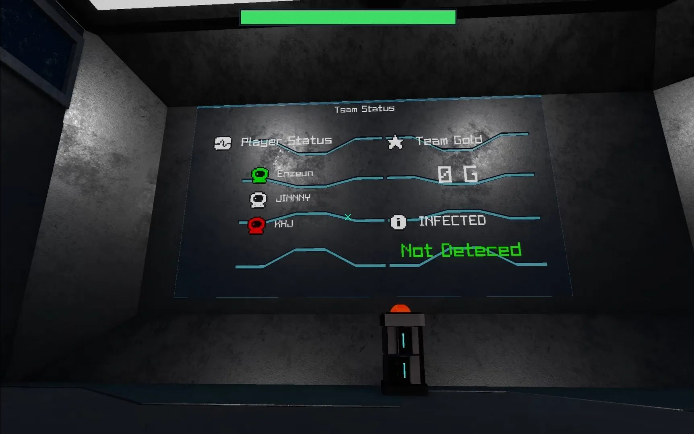
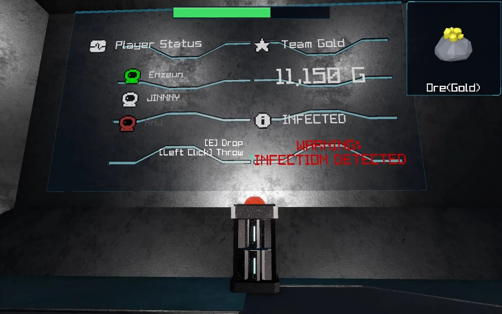
⑥ UI 시청각 피드백
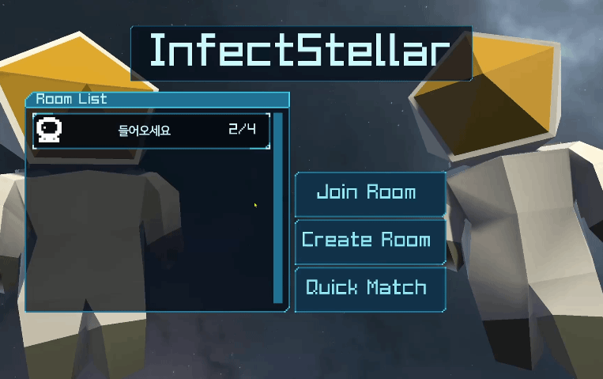
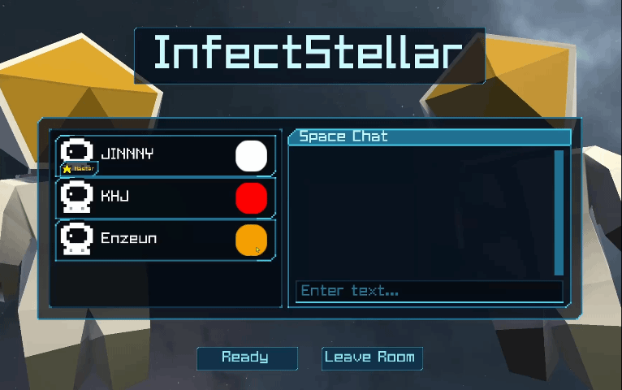
4. 트러블슈팅
PhotonView ViewID 중복으로 매니저가 파괴됨
- 현상
- 게임 종료 후 타이틀 씬으로 돌아가면
DontDestroyOnLoad싱글턴 매니저가 파괴됐습니다. - 원인
- 이미 살아 있는 매니저의 PhotonView와 타이틀 씬에 배치된 PhotonView의 ViewID가 중복됐습니다.
- 해결
- 타이틀 진입 전 전용 초기화 씬에서 매니저를 생성하고, 이후 초기화 씬에 다시 들어가지 않도록 씬 흐름을 수정했습니다.
- 교훈
- 씬을 넘나드는 네트워크 객체는 "어느 씬에서 한 번만 생성되는가"를 먼저 설계해야 합니다.
5. 한계와 회고
- GameManager에 책임 집중 (1,042줄): FSM, 골드, 감염, 탈출, 랭킹, 정산이 한 클래스에 있습니다. 2주 일정에서 통합 속도를 우선한 결과로, 확장한다면 골드·감염·정산을 별도 클래스로 분리하겠습니다.
- 요청 값 검증 부재: 권한은 마스터로 모았지만, 클라이언트가 보낸 금액 자체는 검증하지 않습니다. 판매 아이템을 기준으로 금액을 다시 계산하는 것이 다음 과제입니다.
- 사후 코드 재검토: 포트폴리오를 정리하며 코드를 다시 읽고 조건문 오류 4건(감염 타이머 반복 조건, Photon 초기화 대기 조건, 로딩 타임아웃 예외 처리, 결과 판정 조건)을 찾아 수정했습니다. 조건문은 "의도를 문장으로 읽었을 때 맞는가"로 다시 확인하는 습관을 들였습니다.